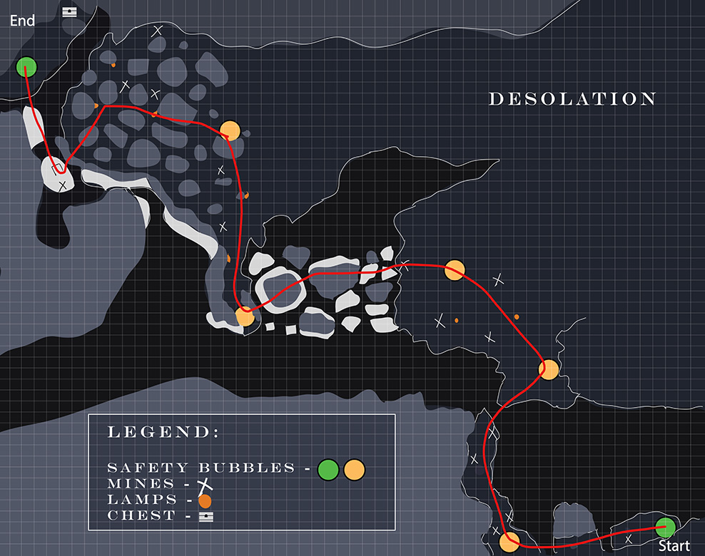
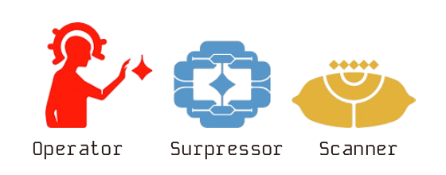
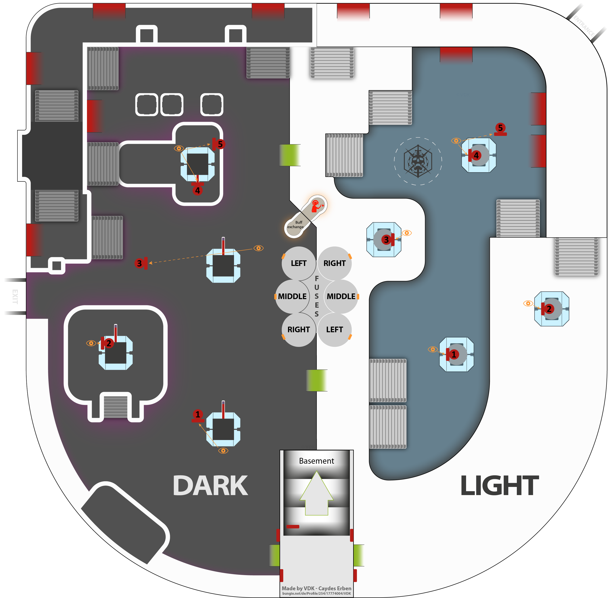
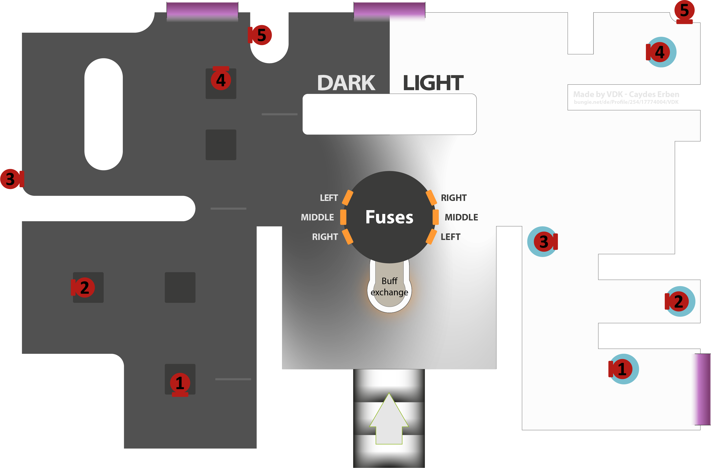

Deep Stone Crypt (D.S.C)
|back
Beyond light was a bit of a doozy, but this raid certainly doesn't have to be! Let's get into it shall we?
Encounter 1: SRL, but it's REALLY cold...
The sparrow part of this raid is evidently the most difficult, SEE THE MAP BELOW TO TRIVIALIZE IT!

Encounter 2: Crypt Bouncers
!! USE A PRECISION HEAVY WEAPON LIKE XENOPHAGE !!
For the whole DSC raid, there will be 3 constant "roles" teams can cycle through, they are...

I will color them according to the image above!
For the Crypt Security encounter, you will see both a light, and dark room with batteries in the middle on both sides that must be destroyed in order to progress the raid to the next encounter.
The group will divide into 2 teams of 3, one on the light side, and one on dark.
To start the encounter, a designated person on the dark side will pick up the Operator role from the terminal located on the wall that has the batteries.
As the encounter starts, both teams will need to kill servitors on their respective sides to progress the encounter, when they are dead, a vandal with the Scanner role will spawn in on the dark side, once dead, a designated player can pick the role up, and head towards the airlock that will lead to the basement.
To open the door to the airlock, the pad on the side of the door will need to be shot by the player with the Operator role. (This will be a reoccuring theme throughout the entire raid), as a note, the pads mentioned below will ALSO be red, and will continue to be so the whole raid!
As the player with the Operator role enters the basement, the Scanner will begin to read out panels that the Operator> must shoot from within the basement to begin the damage phase.
Each side (both light, and dark) has 3 total panels that must be shot by the Operator role (The 4 are chosen at random from a group of 5 on each side respectively, see the maps below for their locations!)
Each side (both light, and dark) has 3 total panels that must be shot by the Scanner role (The 4 are chosen at random from a group of 5 on each side respectively, see the maps below for their locations!)


Example:
Operator enters the basement, and approaches the dark side. The Scanner will now read from above what panels are currently glowing yellow for them, the Operator will then shoot them (totalling 4), and begin to move to the light side.
At this point, the Scanner on the dark side can now pass the Scanner role back into the original terminal that was used to start the raid, a designated player on the light side will then repeat the process detailed above for the other side, which will then initiate the damage phase on the batteries.
Damage Phase
Now that the shields that block the batteries have fallen, the Operator should insert their buff into the terminal located in the basement, at which point a player from either side upstairs can now take the Operator buff from their designated terminal, as long as the buff remains upstairs, that is what matters!
Now, to know which batteries to shoot (and in which order) the Scanner buff must be passed through the terminal on either upstairs side to the basement, the player downstairs should now acquire the Scanner buff from the terminal, and read out which battery is glowing yellow on either respective side, (6 batteries = 6 callouts to the rest of the team upstairs)
If a battery is incorrectly destroyed (I.E destroyed when the downstairs diagram is NOT glowing), it will wipe the encounter and force a reset from the start.
If the damage phase is not completed within the alloted damage timeframe, it is rinse and repeat with the 2 buffs! Get that player out of the basement, and enjoy your hard earned loot once all batteries are destroyed! :)